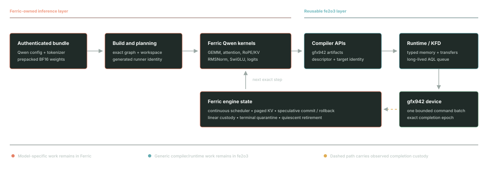

Ferric
A Rust inference engine building an authority-bound path from authenticated model inputs to Ferric-owned Qwen kernels and fe2o3's direct-KFD runtime. Qwen3-8B runs on eight MI350 GPUs with chunked prefill, paged attention, and resident radix reuse. Bounded resident JSONL and loopback HTTP are implemented in private source; separate wave-attention / v11 and same-binary C1-layer profiles have admitted finite context8192 HTTP measurements. The retained vLLM reference is substantially faster. Standalone draft execution and an independent paged-draft FP32 reference pass; end-to-end speculative serving, SGLang measurements, sustained-load and protected qualification remain open.
Current project data requires JavaScript.
Authenticated resident serving
Private implementation progress. Host validation and canonical gfx942 extraction remain distinct from native qualification.
Matched optimization V5: V22 HTTP pair replayed
The latest sequential Ferric V22 packed and vLLM cohorts have completed on mi350. Raw receipts and paired replay pass, including correctness, sampled process ownership and clean shutdown checks. Mean HTTP TPOT is 83.598 ms for Ferric versus 4.252 ms for vLLM: Ferric remains 19.66 times slower in this finite TP1/C1 cell. This is not a performance win or sustained-serving qualification. The earlier V17 pair remains separate history. All 33 M1 gates remain open.
V28 prefill copy: native screening
The accepted V28 native A/B matches all 1,024 reference token IDs and decoded bytes. Mean TTFT falls 65.0183%, from 2312.564 to 808.974 ms; TPOT is effectively unchanged at 85.150 versus 85.154 ms. This small fixed-order comparison is not HTTP or a vendor win. The V22 / vLLM HTTP gap above remains the latest matched result. Prefill and decode gains have not been measured together; do not multiply this reduction by the separate V22 + V25 result. Defaults stay unchanged.
Native composition and runtime instrumentation
Combining opt-in V22 packet packing with V25 split attention passes all 2,048 reference token IDs and decoded bytes across four native arms. In this small fixed-order cohort, composed TPOT is 17.11% lower than its same-binary baseline, while TTFT is 0.52% higher. This is separate from the latest HTTP comparison above, not a new vLLM or SGLang win. Defaults remain unchanged.
Core raw-timestamp instrumentation is published on fe2o3 main at 3d473f9ff. Native validation passes 210 dependent operations and 528 guard checks. These are raw ticks, not shader nanoseconds or isolated kernel durations; no performance gain or proof qualification is claimed. Publication used [skip ci], with no GitHub-hosted build or test. The composition measurement still uses its historical f68 worker, not this newer runtime.
V27 parallel full-page prefill copy has emitted an actual Wave64 image with a 336-byte kernarg segment and 12 arguments, with no LDS, scratch, spills or AGPR use reported. Isolated native validation passes 28 correctness cases and retains 12 timing cells, with clean supervisor teardown. These timings are diagnostics, not a full-model TTFT or TPOT result. The separate V28 full-model native screening is reported below; neither result is serving qualification.
V27 isolated validation evidence
- V27 native report SHA-256
- e501fb19d64e4c28168612eeaa6a5f06865da4399a78910af6070e3a116c58e8
- V27 native archive SHA-256
- 32f5972eb1274bc0d3825e52e7c0cf65a09249f71f3aa36c44ce68c71223a32a
V22 packet packing has now passed an eight-request native Qwen3-8B A/B, matching all 1,024 reference token IDs and decoded bytes. Mean TPOT falls from 111.871 to 98.857 ms in this fixed-order, three-sample-per-arm check; this earlier native result is separate from the new HTTP pair. The opt-in candidate retains the same kernels and packet order while reducing completion groups. This is an initial native observation, not a stable gain or a vendor win.
The separate ordered64 runtime path passes 251 synthetic dependent packets and 594 full-buffer/guard checks, including idle queue rollover, with successful owned cleanup. This is correctness-only: no model inference, timing result or model-performance gain is established.
The separate V17 runtime-counter diagnostic has completed one warmup and one diagnostic request with all 256 output IDs matching the reference, 270 batches, 166,278 dispatches and successful owned cleanup. Its overlapping worker scopes record 23.0 seconds in dispatch waits and 1.9 seconds in currentness checks. Wait includes GPU work, polling and scheduling; these are not additive GPU timings, measured-only TPOT or an HTTP performance result. All 14 harness CPU tests pass; the earlier fake-controller fixture failure is retained.
The V19 single-row KV-copy image has been emitted with fe2o3 5a503c04 and its device CPU tests pass on mi300x-2. The emitted ABI reports Wave64, six VGPRs, zero scratch and zero LDS. All 68 isolated GPU cases and the eight-request native control/candidate check pass, but the small A/B shows no performance gain. Adapter library validation records 376 passes, seven ignored tests and one existing resident-roster test excluded after exceeding the unchanged memory cap; that coverage gap remains explicit. The operation-counter harness passes 19 CPU tests and its 12-cell native diagnostic completes with successful cleanup; those counters do not establish GPU durations or a TPOT gain. Defaults remain unchanged. Neither V19 nor the instrumented diagnostic is included in the completed HTTP pair. Compiler/runtime work stays in fe2o3; kernels and inference integration stay in Ferric. The source-bound V4 and earlier checkpoints below retain their original identities and measurement limits.
Attention attribution and validation
Host attribution, finite-input fixtures and a small native comparison. Not an HTTP serving benchmark.
Qwen3-8B measurements
The latest context8192 HTTP pair, separate native A/B checks, and preserved historical observations. Not production-serving qualification.
Latest V22 / vLLM HTTP pair: no win
Qwen3-8B on mi350 physical GPU 0, TP1, concurrency 1, 128 input and 128 output tokens, context 8192, BF16 decoder and FP32 output head. Both engines use the same SSE client, greedy fixed-length output, speculation off and prefix caching off. Each has 10 excluded warmups, 30 measured requests and two untimed output diagnostics.
| Engine | Mean TTFT (ms) | Mean TPOT (ms) | Output tokens/s |
|---|---|---|---|
| Ferric V22 packed | 2329.922 | 83.598 | 9.885898 |
| vLLM 0.28.0 | 18.636 | 4.252 | 228.904359 |
Ferric has 19.66 times the mean TPOT and 125.02 times the mean TTFT of vLLM in this cell. All 30 measured requests succeed for each engine. Cohorts run in fixed order, vLLM then Ferric, with one server start each. There is no confidence interval or stable-tail claim. This is not a stock BF16-head comparison.
TTFT is client send to first nonempty text. TPOT is the first-to-last text span divided by 127, not true token interarrival latency. Output rate divides 3,840 tokens by the complete measured span, including request gaps and drain, excluding warmups and diagnostics. It is not sustained throughput.
Ferric token IDs and decoded bytes match for all 42 requests. vLLM token IDs match in two untimed diagnostics; its 40 timed requests match decoded text and usage. Both engines use the same 500 ms process-ownership sampling policy, with no observed contamination in the accepted cohorts. Sampling is not continuous isolation proof. Earlier contention-rejected attempts remain excluded. Owned cleanup and GPU-idle postflight pass for both engines.
Replay checks retained model/image hash receipts, not an independent model-file rehash or source-to-binary authentication. This pair uses packed16-v22 with the historical f68 worker from runtime 5ed3840a and five unchanged kernel images. Ordered64, V19, V23 and V25 are not part of this HTTP result. The historical V17 pair below is not mixed into this baseline: cross-campaign differences do not attribute a gain to packet packing alone. No TP8, speculative-decoding, SGLang, general framework ranking or serving qualification is established.
Latest V22 HTTP replay and receipt identities
- Paired replay summary SHA-256
- 0283449b779015bffe0ba72954069ffcca7b809ae6aadf91aa24d6b3fb9d1c07
- Shared plan SHA-256
- 71855e76d38c3d3ff11d21b7ff33d7c67303a5fc28dff07c8deebb0ee14cf7fd
- Ferric receipt SHA-256
- 91cc42648156fbfedd44a03b704ad9c80a125efe8809b0fc4cff5441b9d2fe92
- vLLM receipt SHA-256
- e428d623aaece123ef80d926b93e9be409bfbeb3bef9dcd1023503bf132b35c2
V28 prefill copy: lower native TTFT, unchanged TPOT
Qwen3-8B on mi350 physical GPU 0, TP1/C1, 128 input and 128 output tokens, context 8192, BF16 decoder / FP32 head, speculation and prefix caching off. Each arm has one excluded warmup followed by three measured requests, in fixed baseline then parallel-prefill16-v27 order. Both use the same V28 controller, historical f68 worker, five historical images and the same V27 image. Only the prefill-copy selector changes; V22 packing and V25 split attention are absent from both arms.
| Native prefill arm | Mean TTFT (ms) | Mean TPOT (ms) | Output tokens/s |
|---|---|---|---|
| Baseline | 2312.563649 | 85.149690 | 9.750891 |
| V28 parallel prefill copy | 808.974061 | 85.154418 | 11.011655 |
Within this native cohort, mean TTFT is 65.0183% lower and TPOT is effectively unchanged. Three measured requests per arm in a fixed order provide screening evidence only: no confidence interval, stable gain or tail claim. The independent decode-composition result below cannot be multiplied into this prefill result; the combined candidate has no accepted comparison yet.
These are controller-ingress measurements, neither HTTP timings nor GPU durations. TTFT runs from request arrival to first token completion; TPOT divides the first-to-last token completion span by 127. Each output rate is 384 tokens over the measured ingress window, including gaps and excluding warmup, not sustained throughput. The unchanged matched V22 / vLLM HTTP result remains a loss: 19.66 times the TPOT and 125.02 times the TTFT. No new vLLM or SGLang comparison, TP8, speculation, latest-runtime or serving result follows.
All eight requests match all 1,024 reference token IDs and decoded bytes. Both arms preserve 135 batches and 83,139 packets per request; V27 substitutes 288 prefill append kernels without reducing the packet count. Owned cleanup passes: legacy inner arm teardown used owned TERM/KILL signals, while the outer supervisor exited cleanly without signals. The earlier staging-path failure remains excluded. Exact output parity for this input is not general numerical or protected proof qualification. The 5a/d10 SDK name-string bridge provides engineering custody, not independent source-to-binary authentication. Defaults stay unchanged and all 33 M1 gates remain open.
V28 native screening report and retained evidence
- V28 native report SHA-256
- fd58ba7aa82f7bc7a18868e9837bf0de2929910ef519d74b8302a0b2d68ead17
- V28 retained archive SHA-256
- 039561bd6c792e3e57c7685a65c27e787905aa7f8579850254852f7c17e6fee5
- V28 controller SHA-256
- 3ea106b88e1e77c48ff9d32aa988ecd0554d9b6d5bc1d7eb62b5e4caeff0914c
- Historical V28 worker SHA-256
- f68e42197f5f91854f7ec15c92b2fe1eee29a5620a6d313751e64f0af9598ebc
V22 + V25: four-arm native comparison
Qwen3-8B on mi350, TP1/C1, 128 input and 128 output tokens, context 8192, BF16 decoder / FP32 output head, speculation off and prefix caching off. The fixed order is baseline, packing-only, split-only, then composed, with one excluded warmup and three measured requests per arm. All arms use the same controller binary, historical f68 worker and six historical images. Packing and split-attention selectors are the only arm changes.
| Native arm | Mean TTFT (ms) | Mean TPOT (ms) | Output tokens/s |
|---|---|---|---|
| Baseline | 2299.826074 | 84.737454 | 9.799532 |
| V22 packing only | 2325.464341 | 83.252562 | 9.923006 |
| V25 split only | 2302.796852 | 73.957084 | 10.944131 |
| V22 + V25 composed | 2311.805893 | 70.241527 | 11.395125 |
Relative to this run's baseline, composed mean TPOT is 17.11% lower, mean TTFT is 0.52% higher and measured-window output rate is 16.28% higher. These observed deltas are not an additive prediction from earlier separate V22 and V25 runs. Three measured requests per arm in fixed order do not establish confidence intervals, a stable gain or tail behavior.
These are controller-ingress timings, not HTTP timings or GPU durations. TTFT spans request arrival to first token completion; TPOT is the first-to-last token completion span divided by 127. Each rate divides 384 output tokens by that arm's measured ingress window, including inter-request gaps and excluding warmup. It is not sustained throughput. The latest matched vLLM HTTP loss above remains unchanged; no vendor comparison, SGLang measurement, TP8 result or serving qualification follows.
All 16 requests match all 2,048 reference token IDs and decoded bytes; every arm completes and owned cleanup passes. Conditional split-attention numerical assumptions, including the unverified OCML accuracy bound, remain unchanged. Exact outputs for this input do not establish general numerical or protected proof qualification. Defaults remain unchanged. This is not a latest-runtime result; the newer timestamp instrumentation is not part of this cohort. All 33 M1 gates remain open.
Native composition report and retained evidence
- Composition report SHA-256
- 86500d3357241488ac64692618c7a1bf05ab71062b79b7c75c2d5dfefdd77447
- Composition retained archive SHA-256
- bda385eba79356b7bb311eb83c44e0e064c7ec4a598bb6ab0dadff2a696aee43
- Controller SHA-256
- 898b4ded4d93583c4421f3dbc87fb7beb8ce43e22e4ba18534e6425d91a8d900
- Historical worker SHA-256
- f68e42197f5f91854f7ec15c92b2fe1eee29a5620a6d313751e64f0af9598ebc
V22 native packet-packing A/B
Qwen3-8B on mi350, TP1/C1, with 128 input tokens and 128 output tokens, context 8192, BF16 decoder / FP32 head, speculation off and prefix caching off. Each arm has one excluded warmup and three measured requests, in fixed baseline then candidate order. Both arms use the same controller, f68 runtime, five unchanged images and sequential arrivals; only the packet-grouping selector changes.
| Packet-grouping arm | Mean TTFT (ms) | Mean TPOT (ms) | Output tokens/s |
|---|---|---|---|
| Control: baseline | 2600.412 | 111.871 | 7.614984 |
| Candidate: packed16-v22 | 2524.218 | 98.857 | 8.488262 |
In this run, mean TPOT is 11.63% lower and finite-window output rate is 11.47% higher. Candidate TPOT samples are 98.199, 109.135 and 89.237 ms. Three measured requests in fixed order do not establish a stable effect or confidence interval. Defaults remain unchanged.
These are controller-ingress timings, not HTTP timings. TTFT spans request arrival to first token completion; TPOT is the first-to-last token completion span divided by 127. Output rate divides 384 tokens by the measured ingress window, including inter-request gaps and excluding warmup. This is not sustained throughput, a GPU duration, a vendor comparison or serving qualification.
All eight requests match all 1,024 reference token IDs and decoded bytes. Each arm completes 540 batches and 332,556 dispatches with successful owned cleanup. Inherited CPU affinity and nice 0 are unchanged. The separately tested ordered64 worker is not used in this pair. This native A/B does not replace or improve the frozen HTTP result below.
V22 native report and retained evidence
- V22 native report SHA-256
- 634c1634aac5a1a01fd7e436fe155a8d3300e14e5dca76bb0920dd0af54aa697
- V22 retained archive SHA-256
- a16078f0541f06857cad27a6e549ed83759535ba71db1b967b61cced223e7287
- Ordered64 correctness report SHA-256
- 77e225baf226ef220234834207f6be8568b941ee35410da092bc7f014d5d0b33
V19 native KV-copy A/B: no gain
Qwen3-8B on mi350, TP1/C1, with 128 input tokens and 128 output tokens, context 8192, BF16 decoder / FP32 head, speculation off and prefix caching off. Each arm has one excluded warmup and three measured requests, in fixed control then candidate order. Both arms load the same six images and use the same controller, runtime and sequential arrivals; only the KV-copy selector changes.
| KV-copy arm | Mean TTFT (ms) | Mean TPOT (ms) | Output tokens/s |
|---|---|---|---|
| Control: baseline | 2300.203 | 84.754 | 9.797679 |
| Candidate: parallel-c1-v19 | 2458.523 | 90.230 | 9.196630 |
The candidate is slower on average in this run, with measured TPOT samples of 81.875, 101.385 and 87.431 ms. Three samples in fixed order do not establish a stable effect or a confidence interval. Defaults remain unchanged.
These are controller-ingress timings, not HTTP timings. TTFT spans request arrival to first token completion; TPOT is the first-to-last token completion span divided by 127. Output rate divides 384 tokens by the measured ingress window, including inter-request gaps and excluding warmup. This is not sustained throughput, a GPU duration, a vendor comparison or serving qualification.
All eight requests match all 1,024 reference token IDs and decoded bytes. Each arm completes 540 batches and 332,556 dispatches with successful owned cleanup. Both arms retain inherited CPU affinity and nice 0. Build receipts bind engineering provenance, not independent source-to-binary authentication. This native A/B does not replace or improve the frozen HTTP result below.
V19 native report and retained evidence
- V19 native report SHA-256
- 93817dcd9bb5d66ced2f03d639a89e152626097dc979783a82c6d76ea95600b3
- V19 retained archive SHA-256
- 4f8e658d2c14bdb8ce1669aeab8ef382444d93fb4db258ed9cfd16e812a37a61
Historical V5 matched Ferric / vLLM HTTP pair
Qwen3-8B on mi350 physical GPU 0, TP1, concurrency 1, 128 input and 128 output tokens, context 8192, BF16 decoder and FP32 output-head profile. Both engines use the same SSE client, with speculation and prefix caching disabled. Each cohort has 10 excluded warmups, 30 measured requests and two untimed output diagnostics.
| Engine | Mean TTFT (ms) | Mean TPOT (ms) | Output tokens/s |
|---|---|---|---|
| Ferric V17 combined | 2555.823 | 114.619 | 7.479295 |
| vLLM 0.28.0 | 19.909 | 4.232 | 229.358430 |
Ferric has 27.08 times the mean TPOT and 128.37 times the mean TTFT of vLLM in this cell. All 30 measured requests succeed for each engine. Cohorts run in fixed order, vLLM then Ferric, with one server start each; no confidence interval or stable tail claim follows. This is not a stock BF16-output-head comparison.
TTFT is client send to first nonempty text. TPOT is the first-to-last text span divided by 127, not true per-token inter-token latency. Output rate divides 3,840 tokens by the complete measured cohort window, including request gaps and drain, excluding warmups and diagnostics. It is not sustained throughput.
Independent replay passes the same plan, client, model/image hash receipts and reference checks. Ferric token IDs match for all 42 requests; vLLM token IDs match in the two untimed diagnostics, while its 40 timed requests match decoded text and usage. Owned processes and the vendor container are cleaned up, and GPU postflight checks are idle. The replay checks retained hash receipts; it does not independently rehash model files. The frozen Ferric baseline keeps its 1fc45a52 implementation and 5ed3840a runtime attribution, and existing kernel images retain their original producers. New compiler/runtime adoption and the V19 candidate are separate work, not relabeled baseline results. A finite matched cohort does not establish sustained throughput, serving qualification, a general engine ranking or SGLang performance.
V5 replay and receipt identities
- Paired replay summary SHA-256
- 11c761a2e4408fc29a822a29f87ed10995c5799e407fc3233068f197836974a9
- Shared plan SHA-256
- b25fa9824afeac3b5531aa4748b708abfd8edf87e839a7e862d68f1d41f18175
- Ferric receipt SHA-256
- f6e4837cf1a613e41e28ec311476fbe77a9b1fab9c133a2c7140a8e6cc1be37a
- vLLM receipt SHA-256
- dc98f64b11228002526fe47184b3fe14de419347f45e467692d6ebe9991c94f2
What Ferric can do now
Support is exact-configuration specific. An admitted path never implies a fallback or silent generalization.
Host checks, proofs, and hardware are separate
Every result keeps its source and environment. A scoped proof-release pass does not establish GPU execution, Qwen correctness, performance, or M1 qualification.
Exact native rollover transitions
Anything not listed here remains fail-closed.
| Completed plan | Successor plan | State |
|---|
One production path, two repositories
Ferric owns inference semantics and kernels. fe2o3 supplies the reusable compiler and direct-KFD runtime.

M1 team ledger
Each team reports completed work, its active task, concrete dependencies, the next deliverable, and the latest validation boundary.
Current parallel checkpoint
Retained C1 native diagnostic and integer proof
Retained HTTP and kernel checkpoints
Earlier team records
M1 progress
Recent checkpoints are source-bound. Hardware observations retain their exact, narrower authority.
A smoke pass is not qualification
M1 closure roster
OpenCounts describe required closure products, not a percent-complete calculation.